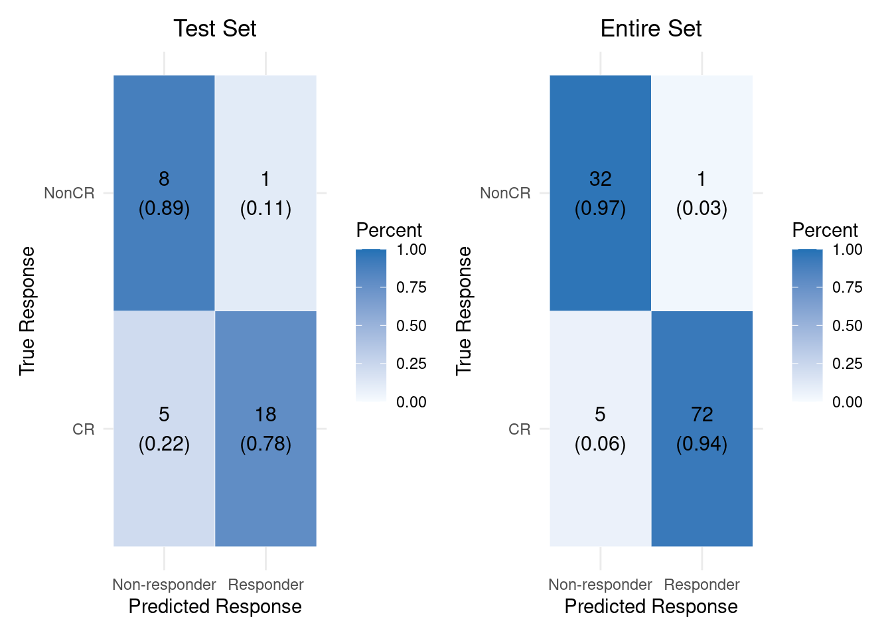
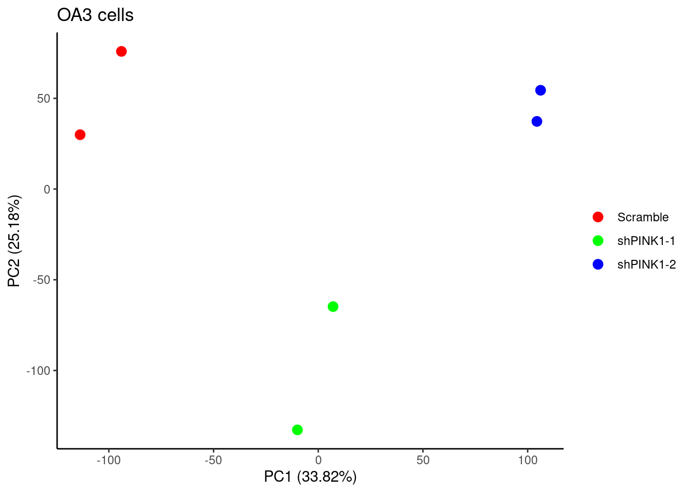

3.8 Differential Expression Analysis for shPINK1
##########################################################################
### Differential Expression Analysis for shPINK1
##########################################################################
# library(GenomicFeatures)
# library(stringr)
# dir <- "../02.data/"
# setwd(dir)
# files <- list.files(dir, pattern = ".count", recursive=TRUE)
# count.files <- list()
#
# for(i in 1:length(files)){
# count.files[[i]] <- read.table(files[[i]], header=FALSE, sep="\t", row.names=1)
# }
# count.matrix <- do.call(cbind, count.files)
# colnames <- gsub(".count", "", files)
# colnames(count.matrix) <- colnames
# count.matrix <- count.matrix[1:60483, ]
# ## Save the count table
# write.table(count.matrix, "../03.out/figure2/shPINK1_count.matrix.txt", sep="\t", row.names=T, col.names=NA, quote=FALSE)
#
# gtffile <- "gencode.v22.annotation.gtf.gz"
# txdb <- makeTxDbFromGFF(gtffile, format="gtf")
# ebg <- exonsBy(txdb, by="gene")
# ebgList <- sum(width(reduce(ebg)))
# genes <- intersect(rownames(count.matrix), names(ebgList))
# Length <- as.vector(ebgList[genes])
# Length <- as.vector(Length)
# ## Normalize
# TPM <- t(t(count.matrix / t(Length)) * 1e6 / colSums(count.matrix / t(Length)))
# TPM <- data.frame(TPM)
# TPM$ID <- row.names(TPM)
# ## gene anno
# anno <- read.table("geneAnnotation.txt", header = F)
# colnames(anno) <- c("ID", "Symbol", "Type")
# tpm <- merge(anno, TPM, by = "ID")
# write.table(tpm, "../03.out/figure2/shPINK1_ID_matched_TPM_matrix.txt")
####
#### PCA analysis
####
library(ggplot2)
library(dplyr)
library(ggfortify)
library(plotly)
library(scatterplot3d)
tpm <- read.table("../03.out/figure2/shPINK1_ID_matched_TPM_matrix.txt", header = TRUE, check.names = FALSE)
## MOLM13 cell lines
dat <- tpm[, 4:9]
row.names(dat) <- tpm$ID
dat <- dat[which(rowMeans(dat[, -c(1:3)]) > 0), ]
scaled_matrix <- scale(t(dat))
pca_result <- prcomp(scaled_matrix, scale. = TRUE)
# Create a grouping vector
groups <- c(rep("Scramble", 2), rep("shPINK1-1", 2), rep("shPINK1-2", 2))
pca_2d_df <- as.data.frame(pca_result$x)
pca_2d_df$Group <- groups
# Define colors for groups
group_colors <- c("red", "green", "blue")
names(group_colors) <- unique(groups)
# Add variance explained for axis labels
explained_variance <- summary(pca_result)$importance[2, ]
x_label <- paste0("PC1 (", round(explained_variance[1] * 100, 2), "%)")
y_label <- paste0("PC2 (", round(explained_variance[2] * 100, 2), "%)")
# pdf("../03.out/figure2/shPINK1_M13_2D_PCA.pdf", width = 5.3, height = 4)
p <- ggplot(pca_2d_df, aes(x = PC1, y = PC2, color = Group)) +
geom_point(size = 3) +
scale_color_manual(values = group_colors) +
labs(
x = paste0("PC1 (", round(explained_variance[1] * 100, 2), "%)"),
y = paste0("PC2 (", round(explained_variance[2] * 100, 2), "%)"),
title = "MOLM13 cells"
) +
theme_classic() +
theme(legend.title = element_blank()) +
guides(color = guide_legend(title = "Groups"))
# dev.off()
print(p)
## OA3 cell lines
dat <- tpm[, 10:15]
row.names(dat) <- tpm$ID
dat <- dat[which(rowMeans(dat[, -c(1:3)]) > 0), ]
scaled_matrix <- scale(t(dat))
pca_result <- prcomp(scaled_matrix, scale. = TRUE)
# Create a grouping vector
groups <- c(rep("Scramble", 2), rep("shPINK1-1", 2), rep("shPINK1-2", 2))
pca_2d_df <- as.data.frame(pca_result$x)
pca_2d_df$Group <- groups
# Define colors for groups
group_colors <- c("red", "green", "blue")
names(group_colors) <- unique(groups)
# Add variance explained for axis labels
explained_variance <- summary(pca_result)$importance[2, ]
x_label <- paste0("PC1 (", round(explained_variance[1] * 100, 2), "%)")
y_label <- paste0("PC2 (", round(explained_variance[2] * 100, 2), "%)")
# pdf("../03.out/figure2/shPINK1_OA3_2D_PCA.pdf", width = 5.3, height = 4)
p1 <- ggplot(pca_2d_df, aes(x = PC1, y = PC2, color = Group)) +
geom_point(size = 3) +
scale_color_manual(values = group_colors) +
labs(
x = paste0("PC1 (", round(explained_variance[1] * 100, 2), "%)"),
y = paste0("PC2 (", round(explained_variance[2] * 100, 2), "%)"),
title = "OA3 cells"
) +
theme_classic() +
theme(legend.title = element_blank()) +
guides(color = guide_legend(title = "Groups"))
# dev.off()
print(p1)